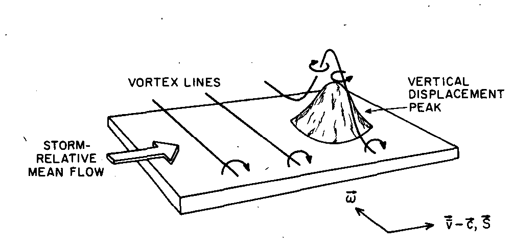

9. Vorticity¶
9.1. Euler’s equations¶
HERE
Will we assume incompressibility? Yes for water waves. No for sound waves (obvs).
We also need to consider how irrotationality could/not arise for inviscid flow.
9.2. The vorticity equation¶
Let us return to the version of Euler’s equation that we gave earlier in (8.4) for a conservative body force:
Since “curlgrad”=0, we can eliminate the head by taking the curl:
The second term can be expanded using vector identities to obtain the following equation for the material derivative of the vorticity:
In an incompressible flow there is no divergence of the velocity field and so we obtain the vorticity transport equation
The term on the right is called the “vortex stretching” term. It gets its non-zero contribution from the component of the velocity gradient parallel to \(\underline{\omega}\), in which case vortex lines are “stretched” by the velocity field, causing them to spin faster. This effect is involved in the formation of tornadoes.
Tornado formation
The presence of strong winds near to the ground creates a shear gradient, which can cause the formation of a vortex line as shown in the image below, which is taken from a 1984 research paper. Thermal updrafts can then tilt the vortex tube upwards to form a vertical column of rotating air. The simultaneous stretching effect of the thermal updrafts can cause tornadoes to spin very fast.
{kind=link}
Note: It should be recognised that the formation of a vortex line is a viscous phenomenon!
For two-dimensional flows the vortex stretching term is zero:
In this case, the vorticity transport equation reduces to
which tells us that the vorticity remains constant following the fluid.
The persistence of irrotational flow in an inviscid fluid
If the fluid is initially irrotational then the vorticity will be zero along all fluid paths. The Euler equation cannot produce vorticity - it can only maintain it! For example, this is the case for flows that are started from rest. The implication is that irrotational flows are more common than you might expect.
Recall, too that the combination of inviscid and irrotational flow satisfies Laplace’s equation \(\nabla^2\phi=0.\)
9.3. Shallow water¶
a